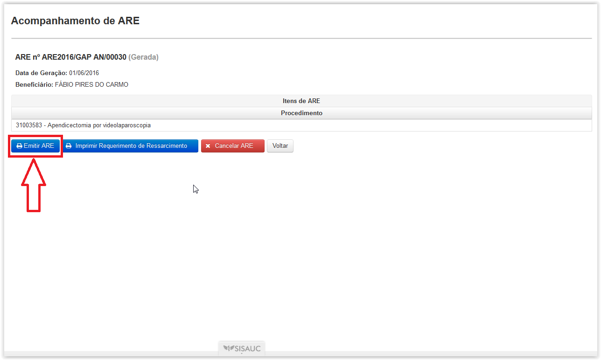
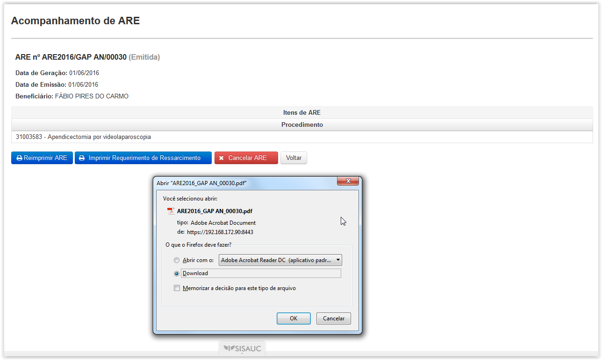
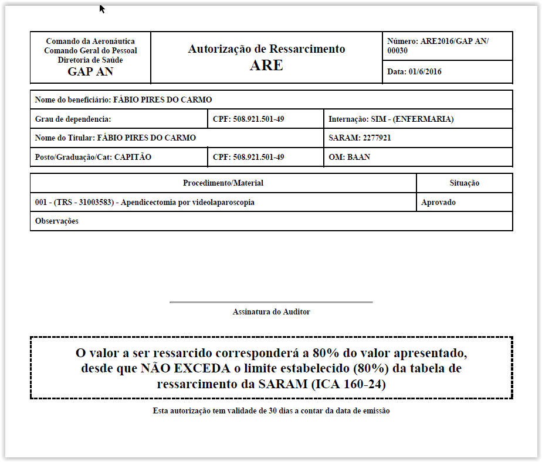

Clicando em 'ARE' surgirá a tela 'Acompanhamento de ARE' onde será apresentada uma lista das ARE organizadas por estado (geradas, emitidas, canceladas, apresentadas, em auditoria, auditada e inconsistente).
É possível facilitar a busca utilizando os filtros Nº ARE, Beneficiário e SARAM Titular, bastando apenas clicar e digitar a palavra a ser buscada ou selecionando a opção Estado.

Tela de Listagem 'Acompanhamento de ARE'
Para visualizar os detalhes da ARE deve-se clicar no botão( ). Será exibida a tela 'Acompanhamento de ARE'.
). Será exibida a tela 'Acompanhamento de ARE'.

Tela de Detalhes 'Acompanhamento de ARE'(ARE no estado gerada)
Esta tela oferece as opções para 'Emitir ARE','Reimprimir ARE','Imprimir Requerimento de Ressarcimento' e 'Cancelar ARE'.
Na tela de "Acompanhamento de ARE", caso ainda não tenha sido emitida a ARE, estará disponível o botao() que, ao ser acionado, exibe uma janela com a opção de abrir ou salvar o arquivo "PDF" gerado e, instantaneamente, habilita o botao de () para uma reimpressão futura, conforme abaixo:
Ao clicar no botão ( ) será gerado um relatório em formato PDFcom os dados da ARE fins de ser impresso.

Tela de Acompanhamento de ARE (Botão Emitir ARE)

Janela de Opção de Impressão do Formulário de Autorização de Ressarcimento - ARE

Formulário de Autorização de Ressarcimento - ARE
Ao clicar no botão () será possível efetuar novamente a impressão do formulário de Autorização de Ressarcimento, similar ao que ocorre ao acionar o botao( ).

Ao clicar no botão ( ) a ARE será cancelada por meio da tela 'Cancelar ARE', onde será obrigatório o registro do motivo do cancelamento.
) a ARE será cancelada por meio da tela 'Cancelar ARE', onde será obrigatório o registro do motivo do cancelamento.

Janela para justificar o cancelamento da ARE